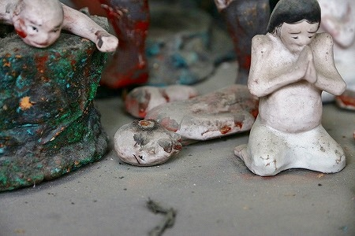
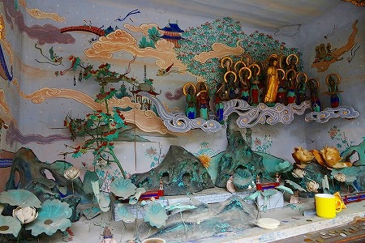

新潟の仏像に特化した素晴らしきサイト、
ガタブツに衝撃的なお寺が紹介されていた。
（ガタブツさんの記事はこちら）
寺の名は
普談寺。
新潟市秋葉区にあるお寺だ。
近年合併して新潟市に編入されたが、日本一の石油の採掘地であった新津、という地名の方がしっくり来る方も多いことであろう。
（新津の石油王の庭はこんなでした）
そんな山間の里にある普談寺、訪れた時期は紅葉真っ盛り。

さて、この寺のどこが衝撃的なのか…を紹介する前にこのお寺の基本的なスペックを紹介しておこう。
大好物は最後にとっておくタイプなもんで。
まずは山門。
注目したいのは左右に控えている仁王像のカッコよさ。
まるで交通事故にあったかのような包帯グルグル巻き状態。
な、わけではなく、信心深い人による手拭の奉納なのだ。
それにしてもお地蔵さんに前掛けを掛けるがごとく
ライト感覚で手拭を縛り付けるあたり、仁王様、なかなかの人気者じゃないか。
包帯巻きばかりに目が行ってしまいがちだが、勿論仁王像の顔やプロポーションといった
造型自体も相当ポイントが高いことは言うまでもあるまい。
山の中腹にある寺。山門を潜るといい感じの階段をのぼることになる。右側通行ですね、ハイ。
で、のぼるとそこにはお堂がぽつんと建っている。
本尊の十一面観音（
朝日観音というのだそうな）を奉る観音堂である。
見事な龍の彫り物。
古代文字のような額字。右から「十壱面観世音」と書いてあるのだろう。
堂内ではお婆さん達が集まってお篭りのような事をしていた。
楽しそうにお喋りしているところに長居しても無粋なので早々に退散しましたよ。
ちなみにこの朝日観音サマは聖徳太子の作だとか。後で知りました。
で、先ほどの山門の脇にあった本堂。
の向かいに小さな建物がある。
実はこの小さな建物が本日のメインエベントなのである。
え？ただの物置じゃないのかって？中をよ〜くご覧くださいまし。
何と
ミニチュアサイズの立体地獄なのだ！
中に入ってみると3つのパートに分かれている。それぞれが額縁のようなものに囲われていて立体絵画を見ているかのような面持ちだ。
で、一番右側は
地獄の景。
閻魔様が裁き、鬼が責め、奪衣婆が衣を奪い、亡者が責められる。
皆さんフル稼働でそれぞれの責務を果たしていらっしゃる。ガンバレ亡者！ノルマ達成は近いぞ！
レッツ来世！
壮大な立体絵巻の主役は勿論
閻魔大王。ミントグリーンのコーディネーションが効いてますね。
勿論、裁判における判定装置もバッチリ充実しております。
アナタの過去を映し出す
浄玻璃の鏡。
アナタの功罪を吟味する
人頭杖。
アナタの罪の重さを測定する
業の秤。
これらの器具で測定されたデータを基に進む道が決まるというわけ。
で、
マイナスポイントが多い人はこうなるのだ。
閻魔サマの頭上の岩山の上には阿弥陀サマがいらっしゃる。
何やら眉間から
ビームのようなモノを出しているようだが…
そのビームは向かいの岩山で合掌している亡者まで繋がっている。
いわゆる地獄でちゃあんと反省すると阿弥陀様が救ってくれるかもよ、という
蜘蛛の糸的な寓話を表しているのだろう。
脱衣婆。目や口が顔の中央にぎゅっと集まっていて緊張感がある。これは先ほどの閻魔大王やその部下達にも言えることだ。
その一方で鬼は随分かわいらしい顔をしている。
もしかしたら複数の人物が手掛けているのかもしれない。
で、メタメタにされちゃった亡者。

食べようとすると燃えてしまう飯。つまり
炒飯、ということ？
壁面の書き割りも妙にリキ入ってます。
岩の上から真っ逆さまに落ちていく亡者の絵などは猛烈にシュールだ。
タイでいうところのトゲトゲの木。国によってその表現は随分かわりますなー。

参照；タイのトゲトゲの木
で、地獄のお隣は
二十五菩薩来迎の景。

人が死ぬ際に
阿弥陀如来が二十五の菩薩を引き連れてお迎えに来る、というシーン。
実際に菩薩まで立体像にしたためるあたり、
力の込め具合がハンパない。
これだけ大勢の菩薩サマが迎えに来られたら拒否できないなー。

ところで。
二十五菩薩という割には若干数が少ないような…。
数えてみよう！。1.2.3.4.…
あれ？阿弥陀様以外には18体しかないですね。
あ、そっか。3体は絵なのか。
それでも21体しかないぞ。
などと思いつつ、全体を見渡してみると…

あああ、こんなところに！
ココにも！お召し物は！？

何の因果で菩薩様が裸で蓮の池で半身浴しているのだろうか？
もしかして私が知らないだけで、「二十五菩薩のうち三人は雲から落ちちゃったんだよねー、有名なハナシじゃん。」などということになっているのか？
詳細をご存知の方、マジで教えてください。
それにしても、草葉の陰に隠れる人を迎えに来てる貴方達が草葉の陰に隠れてちゃダメでしょ。
というわけで3体発見して目出度く24体…って、アレ？まだもう一体足りない！
もしかして、この方も菩薩の一人なのだろうか？
若干の疑問が残るものの、素晴らしきジオラマ来迎図であった。
最後は
賽の河原の景。
賽の河原に子供がいて、その子供を鬼が苛め、その頭上に地蔵菩薩が立っている。
お地蔵さんの背後の壁は湿気による染みなのだろうが、山の稜線にも燃え盛る火のようにも見える。
実はこの賽の河原の立体ジオラマに限って言えば当サイト既報のとおり、
新潟県内にいくつか存在が確認されている。
 上越市
上越市
 阿賀野市
阿賀野市
 柏崎市
柏崎市
 長岡市
長岡市
などなど。
私の知る限り新潟県以外でこのような立体ジオラマ版賽の河原があるところはほとんどない。
つか、あったら教えてください、見に行きますからマジで。
何故新潟県内だけにこのような不思議なジオラマ賽の河原があるのか、理由はまるで判らないのだが、個人的にはかなり注目している。
子供を苛める鬼。先ほどの地獄の鬼同様、あまり恐くない。つかマンガチックだ。
幼くして亡くなった子供たちの土人形。
まっ白い肌、腹掛け、両手を目にやって泣くポーズ…
県内の他地域で見たジオラマ賽の河原に極めてよく似ている。
中にはわざわざ岩場の中腹まで行って泣く剛の者も。
この子も登りながら泣き。
新潟県下で見られる賽の河原ジオラマに加え、来迎図や地獄図をジオラマで仕立ててある点が非常に印象的だった。
小さな、本当に小さなジオラマ世界だったが、思いのほか長い間楽しんでしまった。
やっぱイイね！
立体版仏教説話。